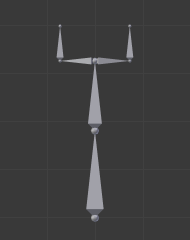
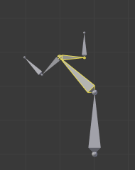

编辑¶

Pose Tools. 姿势工具。
在 姿势模式 ，骨骼行为和物体一样。所以变换操作 (平移、旋转、缩放等) 跟在 物体 模式下很像。 (所有可用的骨骼重新分组 在 子菜单）。但是，有一些重要的特点：
- 骨骼的关系至关重要（参见 Parenting 父子）。
- 给定的骨骼（即它的默认枢轴点，当它是唯一选择的骨骼时）的"变换中心（transform center）" 是 其首端 。注意一些枢轴点选项似乎不能正常工作，实际上，除了 3D Cursor 之外，其它的似乎总是使用选择的中点（当 激活物体 被选中时，而不是例如激活骨骼的首端等）。
Basic Posing 基本姿势¶
如前面所述，骨骼的变换是根据骨架的 重置位置 执行的，也就是 编辑模式 中定义的状态。这意味着在 姿态模式 中，每个骨骼的缩放比例为1.0，零旋转和零位移（你可以在3D视图中按 N 在 Transform 面板中看到）。

选择了两个骨骼，局部Y轴锁定旋转的示例。请注意，两条绿色的轴线以骨架的中心为中心，而不是每根骨骼的首端...
此外，这些动作的局部空间是骨骼自己的空间（当您启用 Armature 面板的 Axes 选项时可见）。这在使用轴锁定时尤为重要，例如 姿势模式 中没有特定的“骨扭转”工具，因为你可以通过按 R-Y-Y 键锁定在局部Y轴上的方式围绕骨骼的主轴旋转... 这也适用于选定的几个骨骼; 每个骨骼都锁定到自己的局部轴！
当你给骨架摆姿势时，假定你用一个或多个物体蒙皮给它！显然，当你在 姿态模式 中转换骨骼时，其相关物体或物体的形状相应地跟着实时移动/变形。不幸的是，如果你有一个复杂的绑定设置和/或一个复杂的蒙皮物体，这可能会产生滞后，并让交互式编辑非常痛苦。如果遇到这种麻烦，请尝试启用 Armature 面板的 Delay Deform（延迟变形） 按钮，一旦应用了变换操作，蒙皮物体才会被更新。
Auto IK 自动IK¶
参考
工具架中的自动IK选项在骨骼摆姿势时启用临时IK约束。链的行为从所选骨骼的尾端到最上面的父级骨的首端。请注意，此模式缺少选项，只能通过将结果转换应用于链中的骨骼来实现。
Clear Transform 清除变换¶
参考
Alt-G, Alt-R, Alt-S一旦你改变了一些骨骼，如果你想回到他们的重置位置，只要清除他们的变换。
- 位置，旋转，缩放
Alt-G,Alt-R,Alt-S - 清除单个变换。
- All
- 立即清除所有内容。
- Reset Unkeyed 重置非关键帧
将变换清除转换到关键帧状态。这个操作也可以用 菜单项。
- Only Selected 仅选定
- 仅在所选骨骼或所有骨骼上操作。
请注意，在 封套（Envelope） 可视化中， Alt-S 不是清除缩放，而是缩放所选骨骼的 距离 影响区域（也可以通过： 菜单项，这仅在 封套（Envelope） 可视化中有效，即使它始终可用...）。
Apply 应用¶
参考
Ctrl-A相反，你可以将当前姿势定义为新的重置位置（即将当前变换应用于 编辑模式 ），方法是使用 菜单项（或 Ctrl-A 确认弹出菜单）。当你这样做时，蒙皮的物体/几何体 也 重置到其默认的值，未变形的状态，这通常意味着你将不得不再次蒙皮。
In-Betweens 中间帧调整¶
在动画中有几种编辑姿势的工具。
Relax Pose 放缓姿态¶
参考
Alt-E放缓姿态与上述主题有些相关，但它只适用于关键帧。当你编辑这样一个骨骼（并因此将其从“关键位置”移开）时，使用此工具将逐渐“回到”其“关键位置”，随着越来越近的时候步调会越来越小。
Breakdowner 补间器¶
参考
Shift-E在当前帧创建一个合适的补间姿态。
姿势模式 还有一堆骨架专用的编辑选项/工具，如 auto-bones naming ， properties switching/enabling/disabling 等等。我们已经在骨架编辑页面中描述过。看上面的链接...
Copy/Paste Pose¶
参考
 )
)Blender 允许你通过 Pose 菜单复制和粘贴姿势，或直接使用3D视图标题右侧部分的三个“复制/粘贴”按钮：
- Copy Current Pose 复制当前姿势
- 将所选骨骼的当前姿势复制到姿势缓存。
- Paste Pose 粘贴姿势
- 将缓存的姿势粘贴到当前姿势的骨骼上。
- Paste X-Flipped Pose 粘贴X轴向翻转（姿势）动作
- 将 X轴镜像 缓存姿势粘贴到当前姿势的骨骼上。
以下是重点：
- 该工具在Blender会话阶段工作，这意味着你可以在电影，场景甚至文件中使用它。但是，姿势缓存不保存，所以当你关闭Blender时，你将丢失它。
- 只有一个姿势缓存。
- 在复制期间只考虑所选择的骨骼（即仅复制选定的骨骼姿势）。
- 另一方面，在粘贴过程中，骨骼的选择并不重要。复制的姿势是以每个名字为基础应用的（例如，如果你在复制姿势时选择了“前臂”骨骼，则当粘贴它时，当前姿势的骨骼会获得其姿势 - 如果没有这样的命名的骨骼，什么都不会发生...）。
- What is copied and pasted is in fact the position/rotation/scale of each bone, in its own space. This means that the resulting pasted pose might be very different from the originally copied one, depending on: - The rest position of the bones, - and the current pose of their parents.

我们原来骨架的重置位置。 |

我们目标骨架的重置位置。 |

第一个复制的姿势（注意，只选择了两个骨骼，因此复制它们）。 |

...粘贴在目标骨架上... |

...镜像粘贴在目标骨架上。 |

上面同样的姿势被复制，但是这次所有骨骼都被选中了，… |

...粘贴在目标骨架上... |

...镜像粘贴在目标骨架上。 |
Propagate 传导¶
参考
Alt-P传导工具将当前帧上所选骨骼的姿态复制到由 终止模式 分隔的关键帧。它自动化复制和粘贴的过程。
ToDo.
Options 选项¶
- Termination Mode 终止模式
确定如何决定何时停止覆盖关键帧的模式。
- While Held 同时举行
- 最复杂的模式可用，因为它尝试通过检查每个控件的动画曲线中的暂停（即骨骼的所有F曲线，而不是每个F曲线）来猜测何时停止传播。
- To Next Keyframe 到下一个关键帧
- 简单地将姿势复制到当前帧之后的第一个关键帧（但不包括任何关键帧）。
- To Last Keyframe 到最末关键帧
- 将简单地替换最后一个关键帧。 （即循环动作）。
- Before Frame
- 到当前帧和 结束帧 选项之间的所有关键帧。此选项最适合脚本使用，因为设置此帧值时有困难，尽管如果需要，可以通过操作面板手动设置此选项。
- Before Last Keyframe 最后一个关键帧之前
- 从当前帧到所有关键帧，直到找不到更多关键帧。
- On Selected Keyframes 在选定的关键帧上
- 将所选骨骼的姿势应用于所有选定的关键帧。
- On Selected Markers 在所选标记处
- 发生在当前帧之后具有场景标记的帧上的所有关键帧。
- End Frame 结束帧
- 定义关键帧将受影响的帧范围的上限（下限为当前帧）。
Show/Hide 显示/隐藏¶
参考
你不必使用骨骼层来显示/隐藏一些骨骼。和物体，顶点或控制点一样，您可以使用快捷键 H:
H将隐藏选定的骨骼。Shift-H将隐藏所有骨骼 但除了所选的那个 。Alt-H将显示所有隐藏的骨骼。
您也可以使用显示面板（ ) 的 隐藏 复选框。
Note that hidden bones are specific to a mode, i.e. you can hide some bones in Edit Mode, they will still be visible in Pose Mode, and vice-versa. Hidden bones in Pose Mode are also invisible in Object Mode. And in Edit Mode, the bone to hide must be fully selected, not just his root or tip.